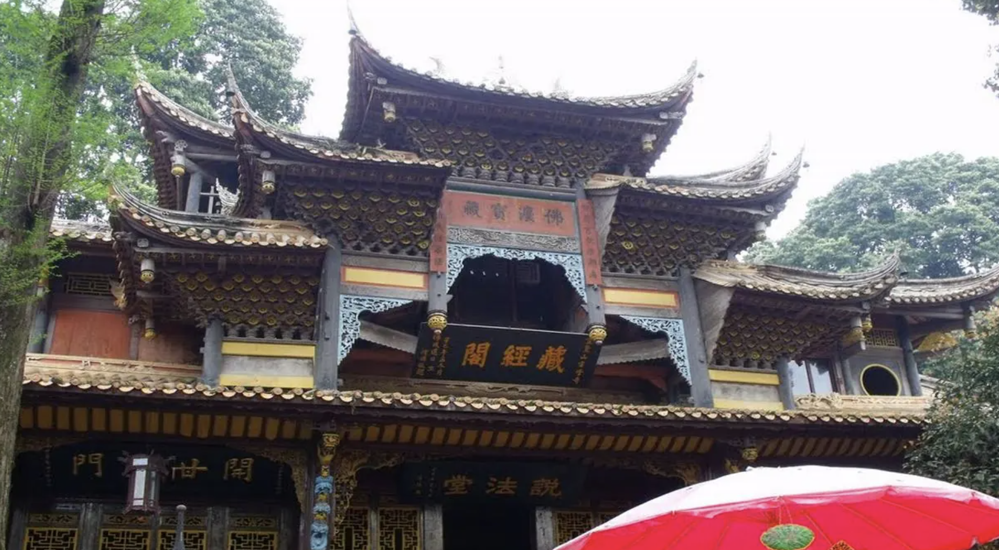

历史人文
云峰寺
泸州方山旅游区里的云峰寺有两座，一座在云峰之巅，叫「老云峰寺」，一座在云峰之麓，叫「新云峰寺」。寺门上的「云峰院」三字石刻匾是时任中国佛教协会副会长、天童寺方丈释明砀法师题。
新云峰寺
新云峰寺始建于唐朝天宝六年（747 年），几经兴废，现在的寺院全部是清康熙年间由圣可法师集资扩建、重修的，有大雄殿、藏经楼、法堂、方丈室等。主体建筑大雄殿是宫殿式结构，琉璃瓦顶，高约 3 丈，宽敞堂皇，宏伟壮观。整座宝殿木雕石琢，刻工精美。殿中供奉释迦牟尼等三佛，两边是十八罗汉，是名家重塑金身。
老云峰寺
老云峰寺距新云峰寺约有千米，始建于唐天宝元年（742 年），初名「回峰寺」。天宝六年（747 年）改名「云峰禅院」，后由唐玄宗加封为魏武帝庙，元以后屡遭兵燹，现存四合院式庙宇，是清乾隆三十三年（1768 年）昆山主持重建的。
游客评价
浅时光 ★★★★★ 爬上天梯虽然累，但看到云峰寺的那一刻觉得值了！
山水客 ★★★★★ 云峰寺的晨钟暮鼓太有感觉了，九十九峰环绕的视野也很震撼。